Press to Play:
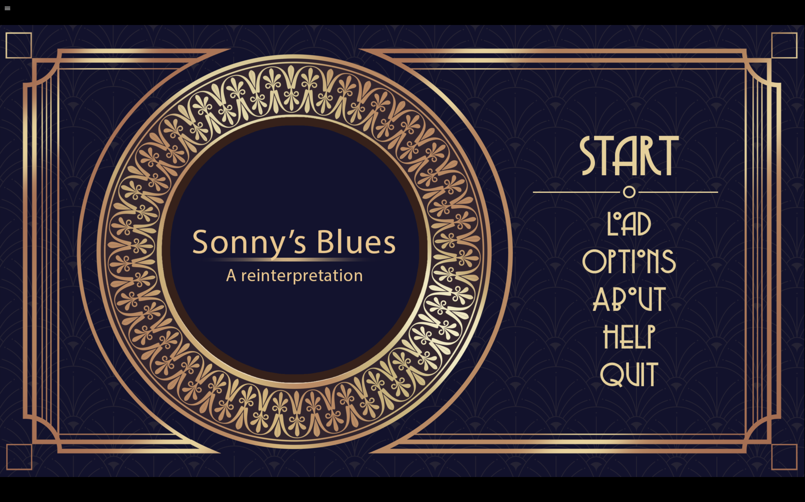
Documentation
Narrative
Our visual novel is built around three scenes: the moment when Sonny’s brother learns about Sonny’s arrest, the scene where the two brothers meet and argue, and the scene at the jazz club. We chose these three scenes to follow a traditional three-act structure, where the first act is the setup, the second act the conflict and climax, and the third act the resolution. Through this structure, we aim to emphasize the growth of Sonny’s brother in his relationship with Sonny: from a close stranger in the first scene, where he is still confused about Sonny, to direct confrontation in the second scene, where he forms a concrete idea of how he should treat Sonny, and finally to resolution in the third scene.
Mood Board
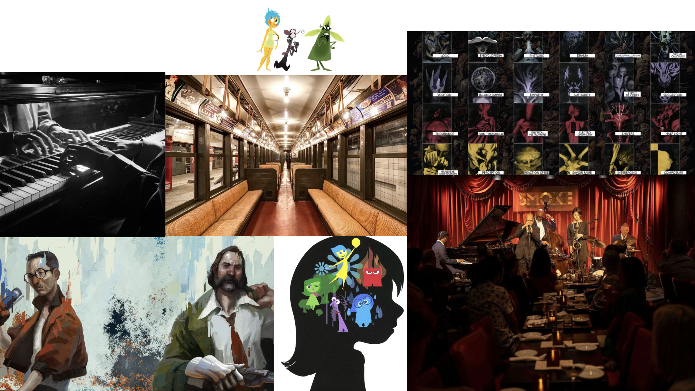
Storytelling Structure
We are adopting a wave + wavelet combination to create a main three-act structure while maintaining smaller, constant tensions throughout. These smaller tensions are reflected in the choices the user makes, which oscillate between two opposing but self-justifying values: the authoritative and protective (represented by the lion) and the enlightened and understanding (represented by the elephant).
Medium
We decided to create a visual novel adaptation of Sonny’s Blues because it aligns well with the message we want to convey: the personal growth of the protagonist through his interactions with Sonny. Since growth is typically a more linear process, it works well with a wave structure in a visual novel, which is itself strictly linear. A visual novel also allows this growth to be felt more intimately, as you play from the protagonist’s first-person point of view, gaining insight into his specific thought processes. An intentional stylistic technique we use is to show only the silhouette of the protagonist throughout the game, inspired by a chapter in Understanding Comics, which suggests that greater abstraction gives the reader more room to interpret and position themselves as the character. Additionally, visual novels allow the user to make choices that affect the story. We think this is an excellent way to convey the notion of growth and the wavelet storytelling structure, where your future self is the product of your past actions, often driven by the clash of two opposing values.
Game Mechanisms
Yet, we didn’t want choices to feel arbitrary, so we introduced a mechanism of coherency. This is meant to reinforce the idea that once you make decisions, they begin to shape who you are, and you end up having to live with the results of your previous choices. If past choices predominantly reflect a particular value, thereby increasing coherency, the player is eventually taken over by the animal representing that value, which then forces the player’s future decisions. There is also an open ending, which occurs when the player interprets the story with logical inconsistencies. This is meant to show that not adhering to any single value can offer maximum freedom, but requires relying entirely on one’s own judgment. The three different endings, together with this mechanism, aim to convey the notion of growth.
Process
I was responsible for the plot, the UI design, and the code in Renpy and the assembly of all the elements:
I built the plot by reading Sonny’s Blues and extracting quotes from the novel that would fit as editable sentences (with some additions of my own to improve transitions). There were two principles I followed: the sentence had to reflect the values of authoritative or enlightened depending on whether certain words were removed or kept, and it also had to serve as a significant driver of the plot. I ended up with nine editable sentences:
- Sonny is [my brother/a talented musician/an American racing driver who competed in Formula One, apparently].
- I didn't want to believe that I'd ever see my brother [going down/suffering/winning Formula 1].
- Part of me wants to [comfort/flex on/ask] Sonny.
- Sonny [seeks/needs] [understanding/meaning].
- When I did, I decided to [write a letter to/meet/completely ignore] Sonny.
- I noticed that Sonny [avoided eye contact/seemed lost in thought/grew a funny mustache].
- All that [dope/financial/jazz] business.
- You don't know how [awful/difficult] it is to be [afraid/yourself].
- I finally feel like I [am starting to understand him/may never understand him/…].
I then connected them to form a coherent story, trying to stay faithful to the original novel by mostly using direct quotes.
Next, I implemented the story in Ren’Py. The transitional parts were relatively easy to implement, as they only require basic functions in Ren’Py. They involved adding transitions between scenes, deciding when characters appear, and etc. The editable sentences, however, were more difficult since there is no preexisting structure in Ren’Py for this. I ended up creating my own menu in code. The basic idea is to make the editable words into buttons that trigger a secondary menu, which then changes the value of the word in the sentence. Each choice increases a variable corresponding to the value it represents. Coherency is calculated as the absolute value of the difference between these variables. There were some obstacles, as I am not very familiar with Python and had no idea how to create UI elements(and indentation in python is really annoying), but I eventually figured it out through asking ChatGPT and doing research online.
# script.rpy
default sentence_stage = 1
default line_subject = "Sonny"
default line_verb = "is"
default line_object = "my younger brother"
default popup_target = ""
default choice_history = []
default auth_points = 0
default enlight_points = 0
default inconsistencies = 0
default pending_choice = None
style edit_frame is frame
style edit_frame:
padding (24, 24)
style edit_text is default
style edit_text:
size 34
style edit_button is button
style edit_button:
background Frame(Solid("#ffffff22"), 2, 2)
hover_background Frame(Solid("#ffffff55"), 2, 2)
insensitive_background Frame(Solid("#ffffff11"), 2, 2)
style edit_button_text is default
style edit_button_text:
size 34
xalign 0.5
yalign 0.5
style popup_button is choice_button
style popup_button:
xfill True
xmaximum 1000
padding (12, 10)
yminimum 60
style popup_button_text is choice_button_text
style popup_button_text:
xalign 0.0
style continue_button is popup_button
style continue_button:
xfill False
xmaximum 420
xalign 0.5
style popup_title is gui_text
style popup_title:
size 33
xalign 0.0
style hint_text is default
style hint_text:
color "#aaaaaa"
size 22
default preferences.text_cps = 30
init python:
def beepy_voice(event, interact=True, **kwargs):
if not interact:
return
if event == "show":
renpy.sound.play("audio/sounds/beeps.ogg", channel="sound", loop=True)
elif event == "slow_done" or event == "end":
renpy.sound.stop(channel="sound")
def record_choice(tag):
if tag not in store.choice_history:
store.choice_history.append(tag)
def apply_choice():
if store.pending_choice == "authoritative":
store.auth_points += 1
elif store.pending_choice == "enlightened":
store.enlight_points += 1
elif store.pending_choice == "playful":
store.inconsistencies += 1
store.pending_choice = None
image elephant first = im.Scale("images/characterSprites/elephant first.png", 675*1.5, 600*1.5)
image macaque first = im.Scale("images/characterSprites/macaque first.png", 475*1.5, 550*1.5)
image lion first = im.Scale("images/characterSprites/lion first.png", 580*0.7*1.5, 800*0.7*1.5)
image elephant second = im.Scale("images/characterSprites/elephant second.png", 675*1.5, 600*1.5)
image macaque second = im.Scale("images/characterSprites/macaque second.png", 475*1.5, 550*1.5)
image lion second = im.Scale("images/characterSprites/lion second.png", 580*0.7*1.5, 800*0.7*1.5)
image main character = im.Scale("images/characterSprites/main character.png", 1152*0.4*1.5, 1925*0.4*1.5)
image sonny smile = im.Scale("images/characterSprites/sonny smile.png",1429*0.4*1.5,1890*0.4*1.5)
image sonny apprehensive = im.Scale("images/characterSprites/sonny apprehensive.png",1429*0.4*1.5,1890*0.4*1.5)
image bg subway = im.Scale("images/background/subway.png",1920,1080)
image bg apartment = im.Scale("images/background/apartment.png",1920,1080)
image bg jazzclub = im.Scale("images/background/jazzclub.png",1920,1080)
image bg fog = im.Scale("images/background/fog.jpg",1920,1080)
define mc = Character(
"Brother",
color="#ffffff",
callback=beepy_voice,
image="main character"
)
define va = Character("The Lion", color="#ff8f8f", callback=beepy_voice, cps=40, image="lion first")
define ve = Character("The Elephant", color="#caa6ff", callback=beepy_voice, cps=20 , image="elephant first")
define vp = Character("The Macaque", color="#8fb7ff", callback=beepy_voice, cps=10, image="macaque first")
define s = Character("Sonny", color="#ffcc88", image="sonny apprehensive")
transform half_size:
zoom 0.5
screen zone_out():
add Solid("#ffffff80")
screen stats_hud():
frame:
style "edit_frame"
xalign 0.50
yalign 0.50
vbox:
spacing 6
text "Authoritative [auth_points]" color "#ff8f8f"
text "Enlightened [enlight_points]" color "#caa6ff"
text "Inconsistencies [inconsistencies]" color "#8fb7ff"
default changeObjectStages = [1, 2, 6]
default changeVerbAndObjectStages = [4, 8]
default changeVerbStages = [3, 5, 7]
screen editable_line():
modal True
frame:
xalign 0.5
yalign 0.35
xfill False
vbox:
xminimum 1500
yminimum 200
hbox:
spacing 14
box_wrap True
xalign 0.5
yalign 0.35
xfill False
text "[line_subject]" style "edit_text"
if sentence_stage in changeVerbStages or sentence_stage in changeVerbAndObjectStages:
textbutton "[line_verb]":
style "edit_button"
text_style "edit_button_text"
action [
SetVariable("popup_target", "verb"),
Show("edit_popup")
]
else:
text "[line_verb]" style "edit_text"
if sentence_stage in changeObjectStages or sentence_stage in changeVerbAndObjectStages:
textbutton "[line_object]":
style "edit_button"
text_style "edit_button_text"
action [
SetVariable("popup_target", "object"),
Show("edit_popup")
]
else:
text "[line_object]" style "edit_text"
textbutton "Continue":
style "popup_button"
text_style "popup_button_text"
xalign 0.5
yalign 0.50
action [
Function(apply_choice),
Return("done")
]
default guide_lock = None
default final_input = ""
screen edit_popup():
modal True
add "gui/nvl.png" xalign 0.5 yalign 0.5
vbox:
xalign 0.5
yalign 0.68
xmaximum 1080
spacing 12
if sentence_stage == 1:
text "Who is Sonny?"
style "popup_title"
textbutton "my younger brother":
style "popup_button"
text_style "popup_button_text"
action [
SetVariable("line_object", "my younger brother"),
Function(record_choice, "obj_brother"),
SetVariable("pending_choice", "authoritative"),
Hide("edit_popup")
]
textbutton "a talented musician":
style "popup_button"
text_style "popup_button_text"
action [
SetVariable("line_object", "a talented musician"),
Function(record_choice, "obj_talented"),
SetVariable("pending_choice", "enlightened"),
Hide("edit_popup")
]
textbutton "an American racing driver who competed in Formula One, apparently":
style "popup_button"
text_style "popup_button_text"
action [
SetVariable("line_object", "an American racing driver who competed in Formula One, apparently"),
Function(record_choice, "obj_formula_one"),
SetVariable("pending_choice", "playful"),
Hide("edit_popup")
]
elif sentence_stage == 2:
text "What happened to my brother?" style "popup_title"
textbutton "going down":
style "popup_button"
text_style "popup_button_text"
action [
SetVariable("line_object", "going down"),
Function(record_choice, "obj_going_down"),
SetVariable("pending_choice", "authoritative"),
Hide("edit_popup")
]
textbutton "suffering":
style "popup_button"
text_style "popup_button_text"
action [
SetVariable("line_object", "suffering"),
Function(record_choice, "obj_suffering"),
SetVariable("pending_choice", "enlightened"),
Hide("edit_popup")
]
textbutton "winning Formula One":
style "popup_button"
text_style "popup_button_text"
action [
SetVariable("line_object", "winning Formula One"),
Function(record_choice, "obj_formula_one"),
SetVariable("pending_choice", "playful"),
Hide("edit_popup")
]
elif sentence_stage == 3:
text "What does part of me want to do?" style "popup_title"
textbutton "comfort":
style "popup_button"
text_style "popup_button_text"
action [
SetVariable("line_verb", "comfort"),
Function(record_choice, "verb_comfort"),
SetVariable("pending_choice", "enlightened"),
Hide("edit_popup")
]
textbutton "ask":
style "popup_button"
text_style "popup_button_text"
action [
SetVariable("line_verb", "ask"),
Function(record_choice, "verb_ask"),
SetVariable("pending_choice", "authoritative"),
Hide("edit_popup")
]
textbutton "flex on":
style "popup_button"
text_style "popup_button_text"
action [
SetVariable("line_verb", "flex on"),
Function(record_choice, "verb_flex_on"),
SetVariable("pending_choice", "playful"),
Hide("edit_popup")
]
elif sentence_stage == 4:
if popup_target == "verb":
text "Choose the verb:" style "popup_title"
textbutton "seeks":
style "popup_button"
text_style "popup_button_text"
action [
SetVariable("line_verb", "seeks"),
Function(record_choice, "verb_seeks"),
SetVariable("pending_choice", "enlightened"),
Hide("edit_popup")
]
textbutton "needs":
style "popup_button"
text_style "popup_button_text"
action [
SetVariable("line_verb", "needs"),
Function(record_choice, "verb_needs"),
Hide("edit_popup"),
If(
line_object == "meaning",
SetVariable("pending_choice", "playful")
),
If(
line_object == "understanding",
SetVariable("pending_choice", "authoritative")
)
]
elif popup_target == "object":
text "What does Sonny seek/need?" style "popup_title"
textbutton "meaning":
style "popup_button"
text_style "popup_button_text"
action [
SetVariable("line_object", "meaning"),
Function(record_choice, "obj_meaning"),
Hide("edit_popup"),
If(
line_verb == "seeks",
SetVariable("pending_choice", "enlightened")
),
If(
line_verb == "needs",
SetVariable("pending_choice", "playful")
)
]
textbutton "understanding":
style "popup_button"
text_style "popup_button_text"
action [
SetVariable("line_object", "understanding"),
Function(record_choice, "obj_understanding"),
Hide("edit_popup"),
If(
line_verb == "seeks",
SetVariable("pending_choice", "enlightened")
),
If(
line_verb == "needs",
SetVariable("pending_choice", "authoritative")
)
]
elif sentence_stage == 5:
text "What did I decide to do?" style "popup_title"
textbutton "write a letter to":
style "popup_button"
text_style "popup_button_text"
action [
SetVariable("line_verb", "write a letter to"),
Function(record_choice, "verb_write_letter"),
SetVariable("pending_choice", "authoritative"),
Hide("edit_popup")
]
textbutton "meet":
style "popup_button"
text_style "popup_button_text"
action [
SetVariable("line_verb", "meet"),
Function(record_choice, "verb_meet"),
SetVariable("pending_choice", "enlightened"),
Hide("edit_popup")
]
textbutton "completely ignore":
style "popup_button"
text_style "popup_button_text"
action [
SetVariable("line_verb", "completely ignore"),
Function(record_choice, "verb_ignore"),
SetVariable("pending_choice", "playful"),
Hide("edit_popup")
]
elif sentence_stage == 6:
text "What did I notice?" style "popup_title"
textbutton "avoided eye contact.":
style "popup_button"
text_style "popup_button_text"
action [
SetVariable("line_object", "avoided eye contact"),
Function(record_choice, "object_avoid_eyecontact"),
SetVariable("pending_choice", "authoritative"),
Hide("edit_popup")
]
textbutton "seemed lost in thought.":
style "popup_button"
text_style "popup_button_text"
action [
SetVariable("line_object", "seemed lost in thought"),
Function(record_choice, "object_lost"),
SetVariable("pending_choice", "enlightened"),
Hide("edit_popup")
]
textbutton "grew a funny mustache.":
style "popup_button"
text_style "popup_button_text"
action [
SetVariable("line_object", "grew a funny mustache"),
Function(record_choice, "object_mustache"),
SetVariable("pending_choice", "playful"),
Hide("edit_popup")
]
elif sentence_stage == 7:
text "What was Sonny addicted to?" style "popup_title"
textbutton "dope":
style "popup_button"
text_style "popup_button_text"
action [
SetVariable("line_verb", "dope"),
Function(record_choice, "verb_dope"),
SetVariable("pending_choice", "authoritative"),
Hide("edit_popup")
]
textbutton "financial":
style "popup_button"
text_style "popup_button_text"
action [
SetVariable("line_verb", "financial"),
Function(record_choice, "verb_financial"),
SetVariable("pending_choice", "playful"),
Hide("edit_popup")
]
textbutton "jazz":
style "popup_button"
text_style "popup_button_text"
action [
SetVariable("line_verb", "jazz"),
Function(record_choice, "verb_lost"),
SetVariable("pending_choice", "enlightened"),
Hide("edit_popup")
]
elif sentence_stage == 8:
if popup_target == "verb":
text "Choose the adjective:" style "popup_title"
textbutton "awful":
style "popup_button"
text_style "popup_button_text"
action [
SetVariable("line_verb", "awful"),
Function(record_choice, "verb_awful"),
Hide("edit_popup"),
If(
line_object == "it is to be afraid",
SetVariable("pending_choice", "authoritative")
),
If(
line_object == "it is to be yourself",
SetVariable("pending_choice", "enlightened")
)
]
textbutton "difficult":
style "popup_button"
text_style "popup_button_text"
sensitive guide_lock is None
action [
SetVariable("line_verb", "difficult"),
Function(record_choice, "verb_difficult"),
Hide("edit_popup"),
If(
line_object == "it is to be afraid",
SetVariable("pending_choice", "playful")
),
If(
line_object == "it is to be yourself",
SetVariable("pending_choice", "enlightened")
)
]
elif popup_target == "object":
text "What does Sonny consider as awful/difficult?" style "popup_title"
textbutton "it is to be afraid":
style "popup_button"
text_style "popup_button_text"
sensitive guide_lock is None or guide_lock == "lion"
action [
SetVariable("line_object", "it is to be afraid"),
Function(record_choice, "obj_afraid"),
Hide("edit_popup"),
If(
line_verb == "awful",
SetVariable("pending_choice", "authoritative")
),
If(
line_verb == "difficult",
SetVariable("pending_choice", "playful")
)
]
textbutton "it is to be yourself":
style "popup_button"
text_style "popup_button_text"
sensitive guide_lock is None or guide_lock == "elephant"
action [
SetVariable("line_object", "it is to be yourself"),
Function(record_choice, "obj_yourself"),
Hide("edit_popup"),
If(
line_verb == "awful",
SetVariable("pending_choice", "enlightened")
),
If(
line_verb == "difficult",
SetVariable("pending_choice", "enlightened")
)
]
elif sentence_stage == 9:
text "Complete the final sentence." style "popup_title"
if guide_lock == "lion" or guide_lock == "elephant":
textbutton "I may never understand him":
style "popup_button"
text_style "popup_button_text"
sensitive guide_lock == "lion"
action [
SetVariable("line_object", "I may never understand him"),
Function(record_choice, "final_lion"),
SetVariable("pending_choice", "authoritative"),
Hide("edit_popup")
]
textbutton "I am starting to understand him":
style "popup_button"
text_style "popup_button_text"
sensitive guide_lock == "elephant"
action [
SetVariable("line_object", "I am starting to understand him"),
Function(record_choice, "final_elephant"),
SetVariable("pending_choice", "enlightened"),
Hide("edit_popup")
]
else:
input:
value VariableInputValue("final_input")
length 140
xmaximum 1200
style "input"
textbutton "Confirm":
style "popup_button"
text_style "popup_button_text"
action [
SetVariable("line_object", final_input),
Function(record_choice, "final_macaque"),
SetVariable("pending_choice", "playful"),
Hide("edit_popup")
]
textbutton "Close":
style "popup_button"
text_style "popup_button_text"
action Hide("edit_popup")
transform darkened:
matrixcolor SaturationMatrix(0.0)
transform lightened:
matrixcolor SaturationMatrix(1.5)
label start:
scene bg fog
with fade
show macaque first at left
vp "Hello. My name is Macaque."
vp "Parts of the story of Sonny’s Blues are missing."
vp "Your role is to play as Sonny’s brother and rebuild the story by choosing words and completing sentences."
vp "As you make choices, two voices will try to influence your decisions."
show macaque first at darkened
show lion first at center
vp "The Lion, who is authoritative and practical."
show lion first at darkened
show elephant first at right
vp "And the Elephant, who is enlightened and sentimental."
hide lion first
hide elephant first
hide macque first
show macaque first at left
show macaque first at lightened
vp "In the end, the version of Sonny’s Blues you create will depend on the choices you make."
vp "Choose carefully, and try to avoid contradictions in logic, memory, or themes."
vp "Now, let’s begin."
hide macaque first
with fade
jump scene_1
label scene_1:
scene bg subway
show main character at left
with fade
mc "I read about it in the paper, in the subway, on my way to work."
mc "I couldn't believe it, and I read it again."
mc "It was not to be believed and I kept telling myself that."
mc "Then his name became real again."
mc "Sonny..."
mc "Who is Sonny to me..."
hide main character
pause 0.3
show screen zone_out
with Dissolve(2.0)
show bg fog
show elephant first at darkened, right
show lion first at lightened, left
with fade
va "It is clear that Sonny is the protagonist’s brother."
va "The story confirms this later on."
show elephant first at lightened
show elephant first at right
show lion first at darkened
ve "That may be true, but Sonny seems to mean more in the text than simply a brother figure."
ve "He identifies more strongly as a musician, and music is the way he expresses himself."
pause 0.2
$ pending_choice = "authoritative"
$ sentence_stage = 1
$ line_subject = "Sonny"
$ line_verb = "is"
$ line_object = "my younger brother"
$ _result = renpy.call_screen("editable_line")
if line_object == "an American racing driver who competed in Formula One, apparently":
show macaque first at center,lightened
show elephant first at darkened
vp "Are you absolutely sure about that?"
vp "That seems... slightly inconsistent with Sonny’s Blues."
pause(1)
hide elephant first
hide lion first
hide macaque first
hide screen zone_out
show bg subway
with Dissolve(0.5)
show main character at left
mc "yes"
mc "[line_subject] [line_verb] [line_object]."
mc "He became real to me again."
mc "When he was about as old as the boys in my classes his face had been bright and open."
mc "I wondered what he looked like now."
pause 1.0
mc "..."
pause 1.0
mc "I didn't want to believe that I'd ever see my brother ..."
hide main character
show screen zone_out
with Dissolve(2.0)
show bg fog
show elephant first at darkened, right
show lion first at darkened, center
show macaque first at left,lightened
with fade
vp "What do you think that he said, Lion?"
show lion first at lightened
show macaque first at darkened
va "I think that he didn't expect his brother to corrupt so badly."
va "As he claims later: 'I told myself that Sonny was wild, but he wasn't crazy.'"
va "He didn't think that Sonny would start to take heroin"
show lion first at darkened
show macaque first at lightened
vp "What about you, Elephant?"
show elephant at lightened
show macaque first at darkened
ve "I think he didn't expect his brother to suffer so badly after they departed."
show elephant at darkened
show macaque first at lightened
vp "It must indeed be truly shocking to him."
# SENTENCE 2
$ pending_choice = "authoritative"
$ sentence_stage = 2
$ line_subject = "I"
$ line_verb = "didn't want to believe that I'd ever see my brother"
$ line_object = "going down"
$ _result = renpy.call_screen("editable_line")
hide elephant first
hide lion first
hide macaque first
hide screen zone_out
show bg subway
with Dissolve(0.5)
show main character at left
mc "[line_subject] [line_verb] [line_object]."
mc "Yet it had happened."
mc "And here I was, talking about algebra to a lot of boys."
mc "Maybe it did more for them than algebra could."
mc "Thinking about Sonny, part of me really wants to..."
hide main character
show bg fog
with fade
pause(2.0)
show macaque first at left,lightened
with fade
vp "Sometimes the animals go on vacation."
vp "Or simply get tired of talking."
vp "In moments like these, you will have to rely on your own judgment."
vp "What do you think Sonny's brother wanted to do?"
$ pending_choice = "enlightened"
# SENTENCE 3
$ sentence_stage = 3
$ line_subject = "Part of me wants to"
$ line_verb = "comfort"
$ line_object = "Sonny"
$ _result = renpy.call_screen("editable_line")
hide macaque first
hide screen zone_out
show bg subway
show main character
with Dissolve(0.5)
mc "[line_subject] [line_verb] [line_object]."
mc "I wonder what Sonny wanted."
mc "He must have..."
hide main character
show lion first at lightened,center
show macaque first at darkened, left
show elephant first at right, darkened
show bg fog
with fade
va "It is obvious that Sonny needs something from the outside to help him."
va "He is arrested for heroin."
va "He is unstable, desperate, and unable to control himself."
va "Something must intervene in his life before he destroys himself completely."
show lion first at darkened
show elephant first at lightened
ve "No, Lion."
ve "Sonny is not simply helpless."
ve "He is searching for something."
ve "You describe him as if he has no agency at all, but the story suggests otherwise."
show elephant first at darkened
show macaque first at lightened
vp "Now you are faced with a more difficult task."
vp "This sentence is missing two words instead of one."
vp "Only one interpretation fully fits the story."
vp "Choose carefully."
$ pending_choice = "enlightened"
# SENTENCE 4
$ sentence_stage = 4
$ line_subject = "Sonny"
$ line_verb = "seeks"
$ line_object = "understanding"
$ _result = renpy.call_screen("editable_line")
hide elephant first
hide lion first
hide macaque first
hide screen zone_out
show bg subway
show main character at left
with Dissolve(0.5)
mc "[line_subject] [line_verb] [line_object]."
mc "..."
pause(2.0)
hide main character
scene black
with fade
jump scene_1_evaluation
label scene_1_evaluation:
show bg fog
show macaque first at left,lightened
with fade
vp "Now, let’s evaluate how well you have performed your task for the first part of Sonny’s Blues."
vp "In terms of coherency... You scored..."
pause(2.0)
vp "[abs(auth_points - enlight_points)] points!"
vp "Your coherencey rating is determined by how consistently your choices align with the interpretation of Sonny you have been constructing."
vp "The more coherency points you have, the more consistent your interpretation of the story is!"
vp "In terms of inconsistencies... You have made..."
pause(2.0)
vp "[inconsistencies] logical or factual errors!"
if(inconsistencies <= 2 and abs(auth_points - enlight_points) > 1):
vp "Keep up the good work! Let's move on to the second part of Sonny's Blues!"
elif(inconsistencies == 4):
vp "How???"
pause(2.0)
hide macaque first
show macaque second at left, lightened
vp "HOW DID YOU MAKE SO MANY STUPID ERRORS!!!!"
vp "Fine."
vp "Please try harder next time to make choices that are consistent with your previous options, and make sure to avoid any stupid errors."
else:
vp "Please try harder next time to make choices that are consistent with your previous options, and make sure to avoid any stupid errors."
hide macaque second
show bg black
with fade
jump scene_2
label scene_2:
show bg apartment
show main character
with fade
mc "And I didn't know what happened to or reach out to Sonny for a long time."
mc "When I did, I..."
hide main character
show lion first at darkened,center
show elephant first at right, lightened
show bg fog
with fade
ve "He probably decided to go and meet Sonny in person."
ve "It is the best way to support and reconnect with someone."
show lion first at lightened,left
show elephant first at right, darkened
va "Are you out of your mind, Elephant?"
va "The book just mentioned that they haven't talked in a very long time."
va "How do you think it would even be possible for him to know where Sonny was?"
va "They must have communicated through letters first."
$ pending_choice = "authoritative"
# SENTENCE 5
$ sentence_stage = 5
$ line_subject = "When I did, I decided to"
$ line_verb = "write a letter to"
$ line_object = "Sonny"
$ _result = renpy.call_screen("editable_line")
hide lion first
hide elephant first
show bg apartment
show main character
with fade
mc "[line_subject] [line_verb] [line_object]."
pause 0.5
mc "It was just after my little girl died."
pause 0.5
mc "Grief had finally connected me and Sonny."
mc "For the first time in years, I wrote him a letter."
pause 2.0
mc "And eventually, he wrote back."
show main character at darkened,left
show sonny apprehensive at right,darkened
with fade
s "You don't know how much I needed to hear from you"
s "I feel like a man who's been trying to climb up out of some deep, real deep and funky hole."
s "I got to get outside."
hide sonny apprehensive
hide main character
show main character at center
with fade
pause 2.0
mc "After that, we began writing to each other."
mc "But even through the letters..."
mc "I still didn't know what Sonny would look like now."
pause 0.8
scene black
with Dissolve(2.0)
pause 1.0
scene bg apartment
with fade
show main character
mc "Then one day, I went to meet him when he came back to New York."
show main character at left
show sonny apprehensive at right,darkened
mc "He came to stay with my family."
mc "We carried his things upstairs in silence."
mc "The whole time, I kept watching him."
mc "I noticed that..."
pause 0.6
hide main character
hide sonny apprehensive
show bg fog
with fade
$ pending_choice = "authoritative"
$ sentence_stage = 6
$ line_subject = "I noticed that"
$ line_verb = "Sonny"
$ line_object = "avoided eye contact"
$ _result = renpy.call_screen("editable_line")
show bg apartment
show main character
with fade
mc "[line_subject] [line_verb] [line_object]."
mc "Even when he smiled, he seemed tired."
pause 2.0
mc "After dinner, the house grew quiet."
hide main character
show main character at left
show sonny apprehensive at right,darkened
mc "Sonny sat by the window smoking."
mc "I kept watching him, trying to understand what had happened to him."
mc "'Tell me,' I said at last."
mc "All that..."
hide main character
hide sonny apprehensive
show bg fog
with fade
$ pending_choice = "authoritative"
$ sentence_stage = 7
$ line_subject = "All that"
$ line_verb = "dope"
$ line_object = "business"
$ _result = renpy.call_screen("editable_line")
show bg apartment
show main character
with fade
mc "[line_subject] [line_verb] [line_object]."
mc "Why did you start doing this?"
hide main character
show main character at left
show sonny apprehensive at right,lightened
s "I don't know."
s "Sometimes people do things because they can't stand what's happening inside themselves."
show sonny apprehensive at right,darkened
mc "But you knew what it could do to you."
show sonny apprehensive at right,lightened
s "..."
s "You don't know..."
pause 4.0
hide main character
hide sonny apprehensive
pause 0.8
scene black
with Dissolve(2.0)
pause 1.0
scene bg fog
with fade
if(inconsistencies < 3 and auth_points > 3):
show lion second at center, lightened
with Dissolve(1.0)
va "Hello."
va "You have probably noticed that we were away for a while."
va "And if you are wondering about Elephant..."
pause 0.5
va "He is gone now."
pause 0.8
va "You have demonstrated that you are capable of making coherent decisions."
va "Unlike Elephant, you understand that Sonny’s suffering must be confronted directly."
pause 0.5
va "This is your reward for remaining consistent."
pause 0.5
va "From this point on..."
va "I will guide your interpretation of the story."
$ guide_lock = "lion"
$ pending_choice = "authoritative"
$ sentence_stage = 8
$ line_subject = "You don't know how"
$ line_verb = "awful"
$ line_object = "it is to be afraid."
elif(inconsistencies < 3 and enlight_points > 3):
show elephant second at center, lightened
with Dissolve(1.0)
ve "Hello."
ve "You have probably noticed that we were away for a while."
ve "And if you are wondering about Lion..."
pause 0.5
ve "He is gone now."
pause 0.8
ve "You no longer need to worry about being judged for your choices."
ve "This is your reward for understanding Sonny beyond appearances."
pause 0.5
ve "From this point on..."
ve "I will help guide your interpretation of the story."
$ guide_lock = "elephant"
$ pending_choice = "enlightened"
$ sentence_stage = 8
$ line_subject = "You don't know how"
$ line_verb = "awful"
$ line_object = "it is to be yourself."
else:
show macaque second at center, lightened
with Dissolve(1.0)
vp "Hello."
vp "You have made a considerable number of inconsistencies."
pause 0.5
vp "At this point, the story has begun to lose its stable structure."
vp "The version of Sonny's Blues you are constructing no longer fully belongs to Lion or Elephant."
pause 0.8
vp "And if you are wondering where they went..."
pause 0.5
vp "They are both gone now."
pause 0.8
vp "From this point forward, the rest of the story will remain open to interpretation."
vp "There may no longer be a single coherent version of Sonny."
pause 0.8
vp "So please continue."
vp "And make the decisions that you most identify with."
$ guide_lock = None
$ pending_choice = "authoritative"
$ sentence_stage = 8
$ line_subject = "You don't know how"
$ line_verb = "awful"
$ line_object = "it is to be afraid."
$ _result = renpy.call_screen("editable_line")
hide macaque second
hide lion second
hide elephant second
show bg apartment
show main character at left
show sonny apprehensive at right,lightened
with fade
s "[line_subject] [line_verb] [line_object]."
pause 0.8
show sonny apprehensive at right,darkened
mc "After that, neither of us spoke for a while."
mc "The room felt heavy."
mc "Like we had both finally said something that had been waiting there for years."
hide sonny apprehensive
show main character at left
show sonny smile at right,darkened
with fade
mc "It wasn't a big smile."
mc "But it was the first real smile I'd seen from him since he came home."
show sonny smile at right,lightened
with fade
s "'Listen,' Sonny said."
s "I'm playing at a club downtown tomorrow night."
pause 0.5
s "Why don't you come and hear me play?"
hide sonny smile
scene black
with fade
jump scene_2_evaluation
label scene_2_evaluation:
if guide_lock == "lion":
show bg fog
show lion second at center,lightened
with fade
va "The Macaque vanished alongside the Elephant."
va "There is no longer any need for evaluation."
va "Proceed to the final scene."
elif guide_lock == "elephant":
show bg fog
show elephant second at center,lightened
with fade
ve "The Macaque vanished alongside the Lion."
ve "There is no longer any need for evaluation."
ve "Proceed to the final scene."
else:
show bg fog
show macaque first at center,lightened
with fade
vp "Now, let’s evaluate how well you have performed your task for the second part of Sonny’s Blues."
vp "In terms of coherency... You scored..."
pause(2.0)
vp "[abs(auth_points - enlight_points)] points!"
vp "In terms of inconsistencies... You have made..."
pause(2.0)
vp "[inconsistencies] logical or factual errors!"
pause 0.8
hide macaque first
show macaque second at center,lightened
vp "Interesting."
vp "Even after all this..."
vp "Your version of Sonny is still incomplete."
pause 0.6
vp "Perhaps that is unavoidable."
vp "The story was never really about reconstructing Sonny exactly as he was."
vp "It was about how people interpret suffering, life, and death."
pause 0.8
vp "Lion wanted certainty."
vp "Elephant wanted understanding."
vp "But neither of them could fully explain Sonny on their own."
pause 0.8
vp "And now they are gone."
vp "So whatever remains of Sonny..."
vp "Will depend entirely on you."
pause 1.0
hide macaque second
show macaque first at center,lightened
vp "Proceed to the final scene."
hide macaque second
hide elephant second
hide lion second
show bg black
with fade
jump scene_3
label scene_3:
show bg jazzclub
show main character at left
with fade
mc "The club was small and dark."
mc "Smoke drifted through the room."
mc "People talked quietly over the sound of glasses and music."
pause 0.8
show sonny smile at right,darkened
with Dissolve(1.0)
mc "Then Sonny walked to the piano."
pause 0.8
s "..."
pause 1.0
show sonny smile at right,lightened
with fade
mc "And when he began to play..."
mc "It felt like he was saying everything that neither of us knew how to say before."
pause 0.8
hide sonny smile
hide main character
scene black
with Dissolve(2.0)
pause 1.0
scene bg fog
with fade
if guide_lock == "elephant":
$ pending_choice = "enlightened"
$ sentence_stage = 9
$ line_subject = "I finally"
$ line_verb = "feel like"
$ line_object = "I am starting to understand him"
$ _result = renpy.call_screen("editable_line")
mc "[line_subject] [line_verb] [line_object]."
pause 1.2
scene black
with Dissolve(3.0)
mc "For the first time, Sonny no longer felt distant to me."
mc "Not because I solved him."
mc "But because I finally listened."
pause 1.0
scene black
with Dissolve(3.0)
centered "{size=+20}ENDING — UNDERSTANDING{/size}"
elif guide_lock == "lion":
$ pending_choice = "authoritative"
$ sentence_stage = 9
$ line_subject = "I finally"
$ line_verb = "feel like"
$ line_object = "I may never understand him"
$ _result = renpy.call_screen("editable_line")
mc "[line_subject] [line_verb] [line_object]."
pause 1.2
scene black
with Dissolve(3.0)
mc "Maybe Sonny was never someone I could completely understand."
mc "Maybe suffering always leaves something unreachable inside a person."
pause 1.0
scene black
with Dissolve(3.0)
centered "{size=+20}ENDING — DISTANCE{/size}"
else:
$ sentence_stage = 9
$ line_subject = "I finally"
$ line_verb = "feel like"
$ line_object = final_input
$ _result = renpy.call_screen("editable_line")
mc "[line_subject] [line_verb] [line_object]."
mc "Part of me couldn't stop thinking about the choices."
mc "About how every sentence seemed to push me toward a certain version of Sonny."
mc "A suffering Sonny."
mc "A faithful Sonny."
mc "A coherent Sonny."
pause 0.8
mc "Yet..."
mc "Perhaps life isn't predictable all the time."
mc "There are things always open to change and uncertainty."
pause 1.0
scene black
with Dissolve(3.0)
centered "{size=+20}ENDING — Creative{/size}"
return
As for the UI I used a template on itch.io
The difficulty lay in applying the graphic elements from the template to the customized editable-sentences menu. I spent some time exploring the template’s assets and further customizing them so that they would integrate smoothly with the editable sentences.
Hubert drew the illustrations for the characters and scenes:
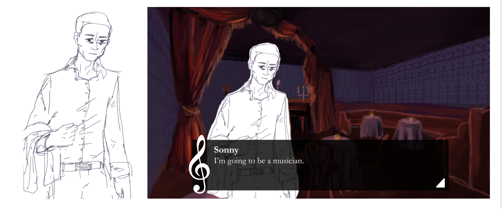
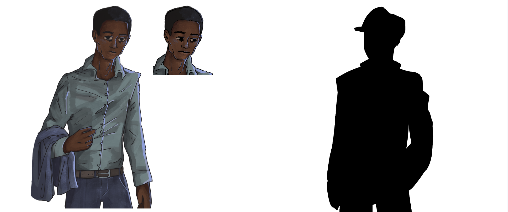
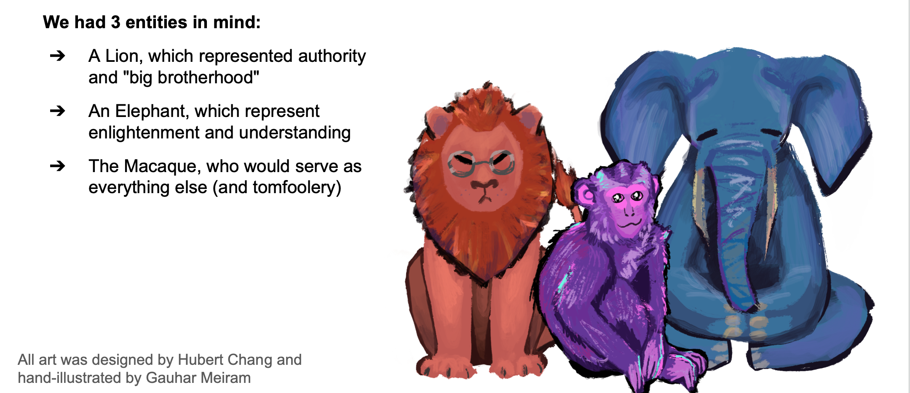
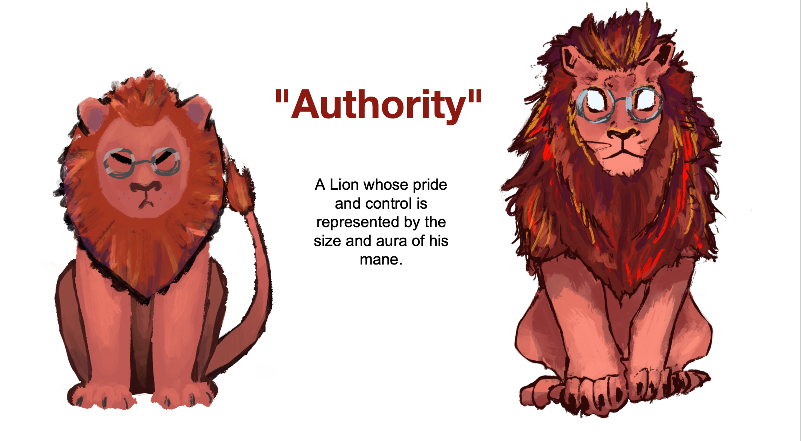
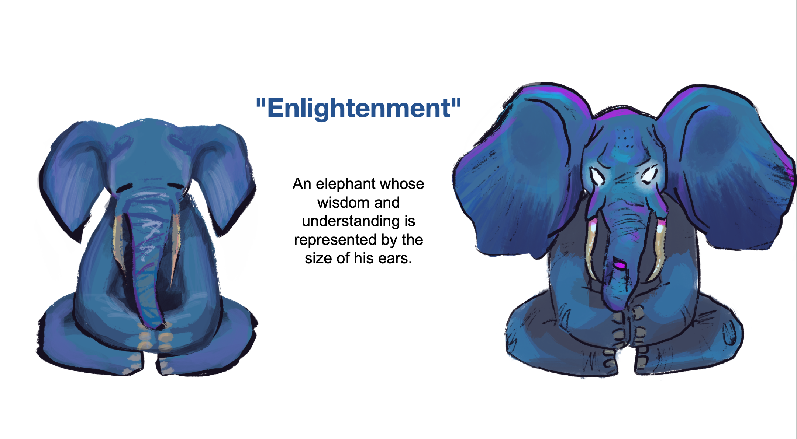
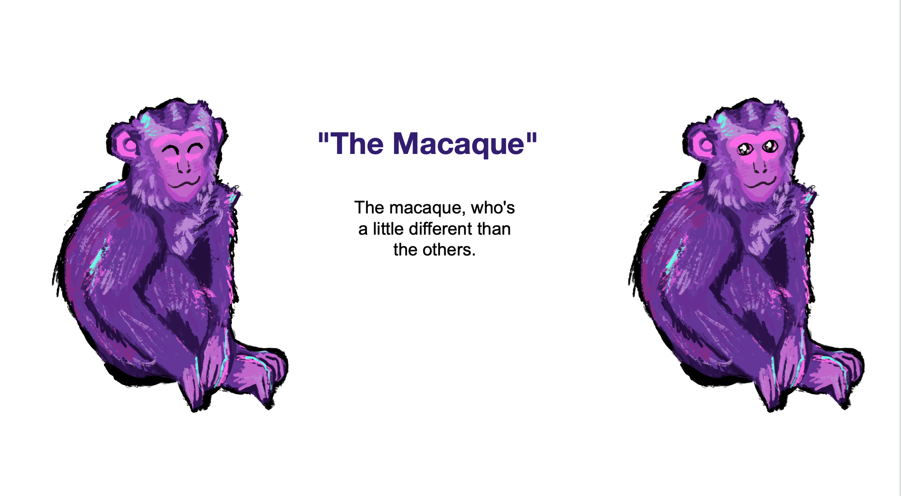
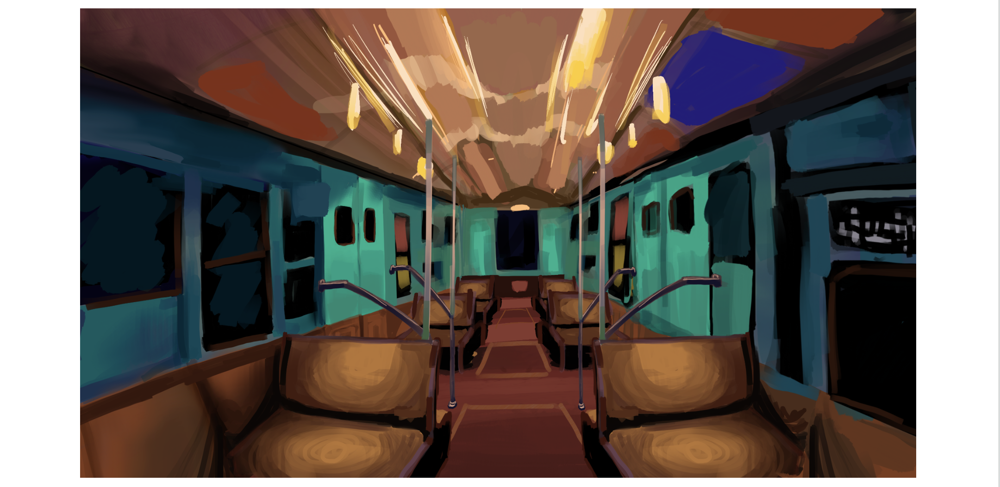
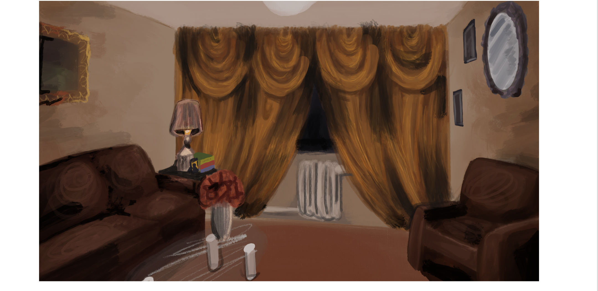
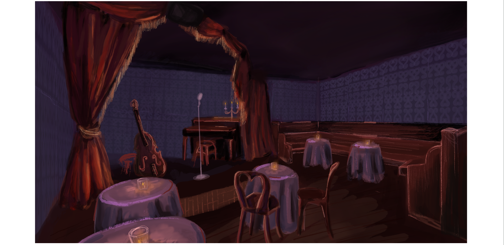
User testing
- We learnt that the dropdowns weren't obvious to everyone → Made the UI more intuitive and inviting for interaction
- The personas (the animals) were a little confusing to people at first since they were just animals → Explained their role in a tutorial at the beginning
- Users weren't clear what persona their choices were leaning towards → Made animals have an evolved visual, signifying you've chosen a lot of "authoritative" or "enlightened" options